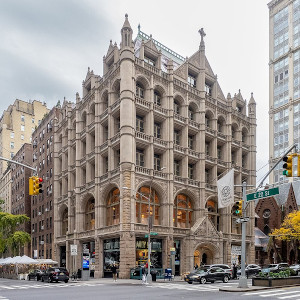

Church Missions House (also known as 281 Park Avenue South) is a historic building at Park Avenue South and East 22nd Street in the Gramercy Park neighborhood of Manhattan in New York City, in an area once known as "Charity Row". The building was designed by Robert W. Gibson and Edward J. Neville Stent, with a steel structure and medieval-inspired facade. The design was inspired by the town halls of Haarlem and medieval Amsterdam. Church Missions House is so named because it was the headquarters of the Episcopal Church's Domestic and Foreign Missionary Society for much of the 20th century.
Did you know we're surrounded by other great things to do? Pair your Museum visit with an exploration of the Brooklyn Botanic Garden,Brooklyn Public Library,Prospect Park, Prospect Park Zoo, or Brooklyn Children's Museum. You'll also find lots of restaurants nearby. If you're visiting from uot of town, we encourage you to consider accomodation at one of our hotel supporters, The Beekman, Le Méridien and W New York Union Square.